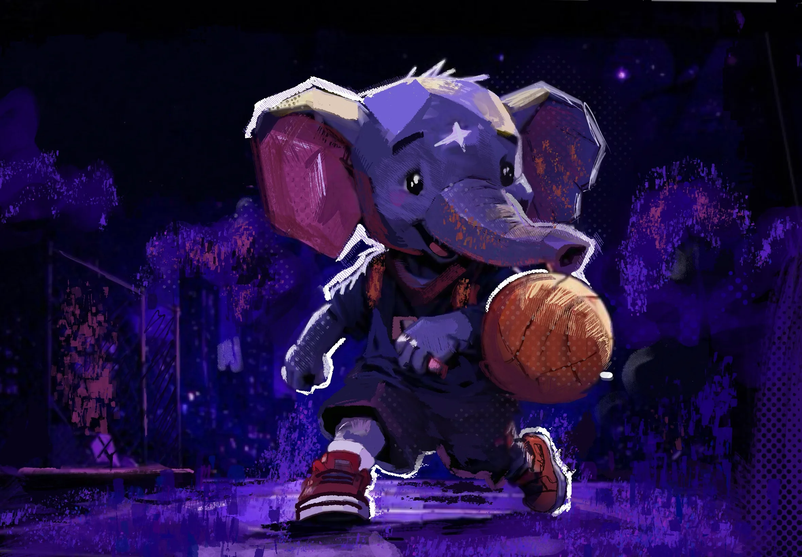
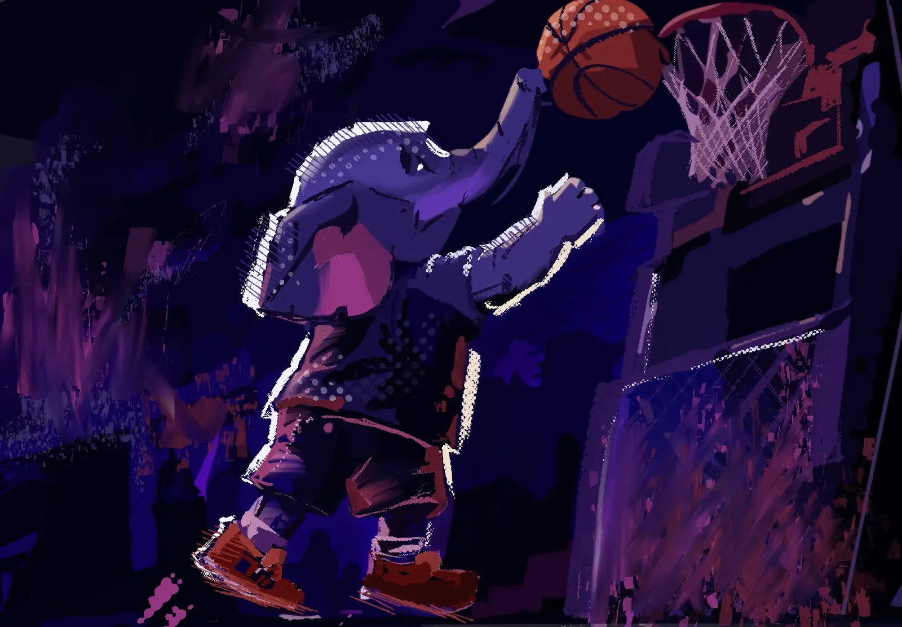
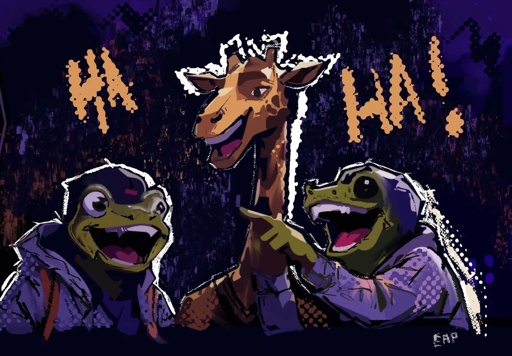
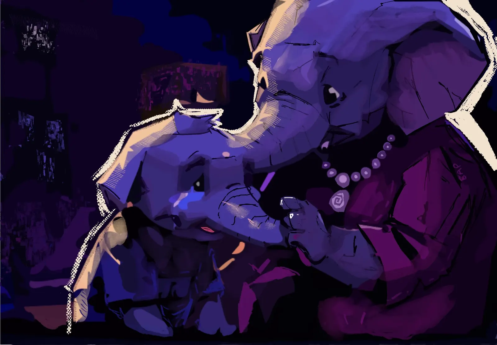
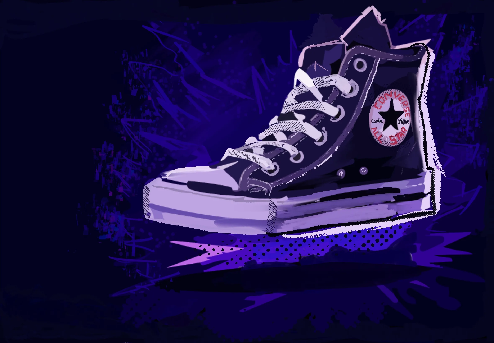
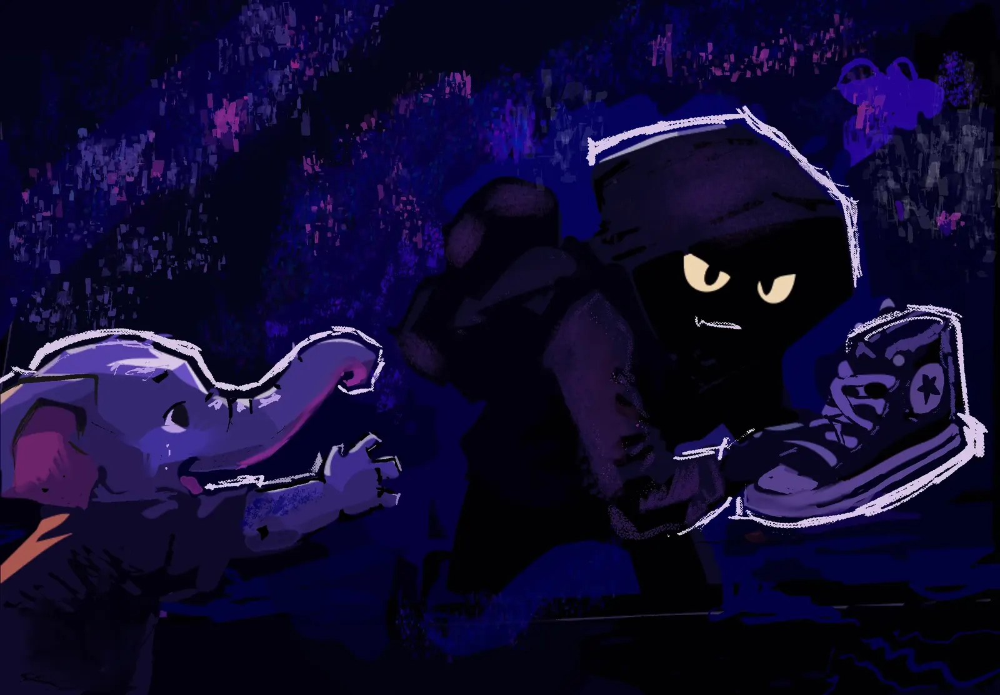
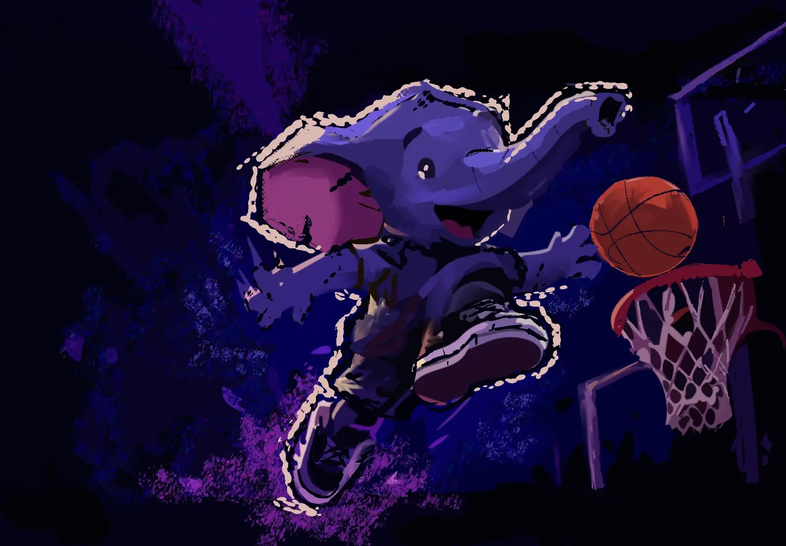
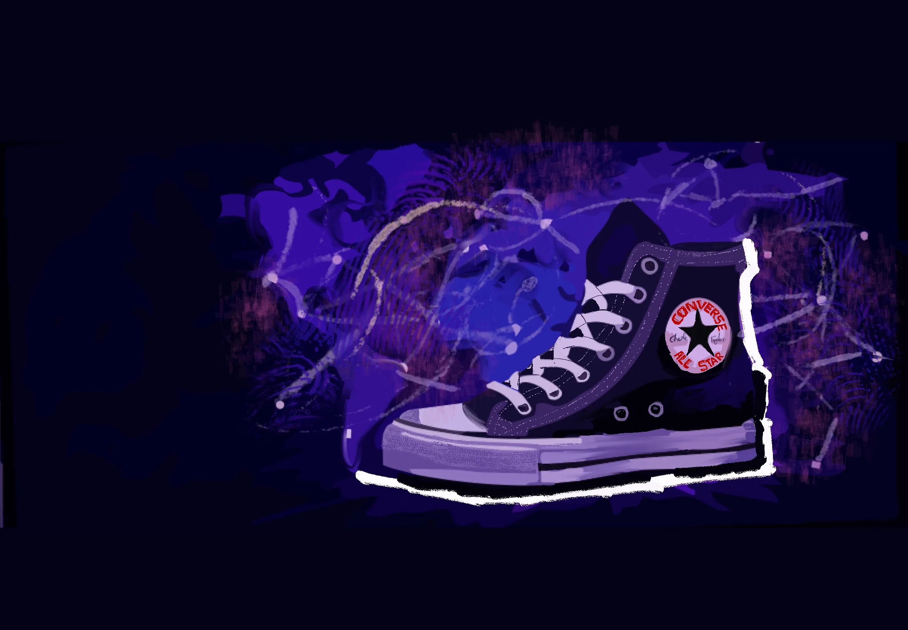
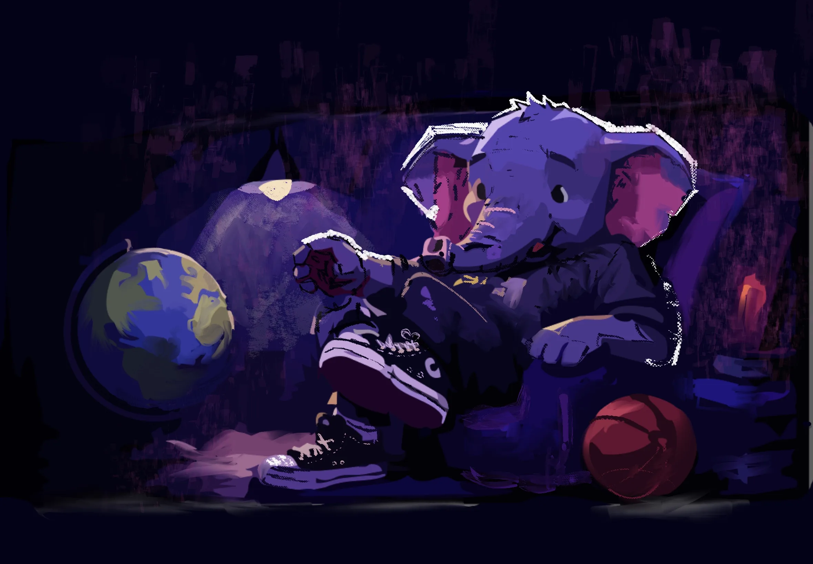

// ISSUE 003 — A KICKERSHOE COMIC
THE ELEPHANT IN THE ROOM
A basketball dream, a broken hop, and the high-top that started it all. Every legend begins with a bruise. Nine panels trace a spring-loaded fix built out of love, stolen out of envy, and rebuilt into a brand that outgrew the elephant who inspired it.
OUT NOW
// THE FULL STORY
THE COMIC
-
01 // STREETBALL

Once, there was an ELEPHANT KID who loved to play BASKETBALL. Every day he went to his local street to play with his friends.
-
02 // THE REACH

Every time he tried to jump to the basket, he wasn't able to jump high... his weight was too much.
-
03 // MOCKED

He had two friends, a GIRAFFE and a FROG. They made fun of him for not being able to jump high.
-
04 // HOME

Later he went home and cried in front of his mom that he wasn't able to jump.
-
05 // THE FIX

So his mom made up a shoe with a SPRING inside — so he could jump higher than anyone else in the world.
-
06 // ROBBED

He wore that shoe and jumped higher than anyone, scoring point after point... until someone saw the shoes and ROBBED them from him!
-
07 // THE BRAND

So he built a shoe company of his own — and designed it after his own name: CHUCK TAYLOR.
-
08 // WORLDWIDE

The brand became famous across the whole world — all because of one elephant.
-
09 // THE REVEAL

The company later revealed the design was made from an elephant. And so it became known as... THE CONVERSE ORIGINALS.
// FIELD NOTES — RESTRICTED
LORE
ENTRY 01WHO IS THE ELEPHANT?+
Grey, gentle, and built like a tank — which was exactly the problem. Loved the game more than the game loved him back. Never missed a street run, even when he never touched the rim.
ENTRY 02THE STOLEN SHOE+
Taken clean off his feet on a dark street, mid-celebration. No witnesses. No footage. Just a hoodie, a shadow, and a legend already halfway written.
ENTRY 03THE HIDDEN INSPIRATION+
A witness at the streetball court swears the elephant's hang-time was measured, once, at 0.92 seconds — then insists that number means something, points at a faded number 23 spray-painted on the backboard, and refuses to elaborate further. We looked into it. We're still looking into it.
ENTRY 04THE DESIGN BRIEF+
Every panel earns its place. The reinforced toe box borrows directly from tusk structure — dense at the point of impact, hollow everywhere weight can be spared, because an elephant that jumps needs a landing plan as much as a takeoff. The spring coil hidden in the heel isn't just a mother's fix for a crying kid at dinner — it's tuned to the exact hang-time of a very famous free-throw-line dunk, replayed frame by frame until the numbers matched. And the grey upper isn't grey by accident. It's the one colour loud enough to be unmissable and humble enough to never say so.
ENTRY 05WHY THE SPRING?+
A mother's fix for a kid who cried at the dinner table. No patent office would touch it. No rulebook accounted for it. It worked anyway.
ENTRY 06THE NAME CHUCK TAYLOR+
Not a person. Never was. A name an elephant picked because it sounded nothing like an elephant. The world believed it instantly.
ENTRY 07THE PITCH+
Internally logged as Project TRUNKMAN 23 — because "Jumpman" was, we were reliably informed by our lawyer, "extremely taken." Pitched to three sportswear giants under three different fake names. One laughed. One asked for a redesign "without the tusks, legally speaking." One sent a very long, very polite letter that said nothing at all. We've kept the tusks. If anyone from Chicago, Portland, or otherwise is reading this: the elephant remembers everything. He'd also like his shoe back.
// KEEP READING